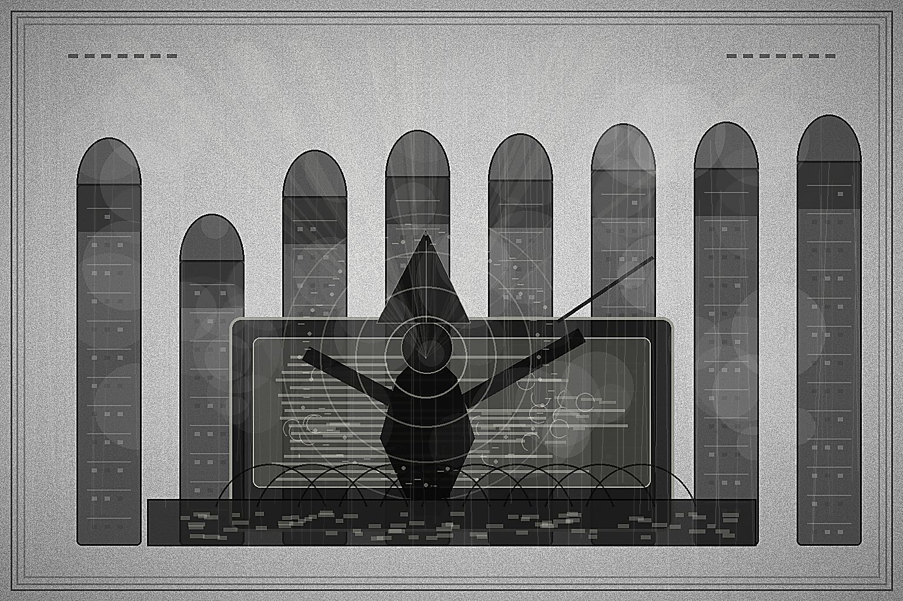

Morning Edition
6:00 AM CDTFinance & Markets
Wall Street Starts the Week Counting IPO Sparks
Investment banks head into earnings week with the fee cauldron bubbling again: FT reported second-quarter investment-banking fees at their strongest level in more than four years, powered by SpaceX's landmark IPO, mega-mergers, AI appetite, and revived equity capital markets. The useful read for builders is simple: when capital formation reopens, the market rewards compute stories, infrastructure stories, and any company that can explain its growth engine without waving its hands.
— Sources: Financial Times on Wall Street fees, Financial News London bank earnings preview, July 13, 2026Hormuz Turns Into the Morning's Macro Exception
AP and The Guardian both put the Strait of Hormuz back at the center of the risk ledger after the U.S. launched another wave of strikes against Iran and Tehran answered with regional attacks and control claims over the waterway. Oil's jump is not just an energy story; it is a dependency diagram with inflation, shipping, rates, and earnings all hanging off one narrow channel.
— Sources: AP on U.S.-Iran and Hormuz, The Guardian on new U.S. strikes, July 13, 2026Private Equity Chooses Bigger, Sharper Bets
Private equity's 2026 theme is selectivity rather than spray-and-pray. PwC's midyear outlook says U.S. PE deal volume fell while average deal size jumped, with capital clustering around higher-conviction assets, and Apollo's fresh easyJet bid shows sponsors still hunting public companies when the thesis is clean enough. The exit door remains narrow, so secondaries, carve-outs, and public-to-private bids are doing more of the liquidity work.
— Sources: PwC U.S. PE midyear outlook, The Guardian on Apollo/easyJet, July 10-13, 2026World & US
U.S. and Iran Trade Strikes Over a Fragile Sea Lane
The conflict around Hormuz escalated again overnight, with U.S. strikes aimed at degrading Iran's ability to threaten civilian and commercial vessels and Iran retaliating against countries hosting U.S. forces. Diplomats are still trying to keep channels open, but the interim maritime deal now looks more like a failing health check than a stable release.
— Sources: AP on the Hormuz conflict, The Guardian, July 13, 2026Ukraine Looks to Paris for More Air Defense
Volodymyr Zelenskyy is in Paris for a "Coalition of the Willing" summit focused on air defenses, missile cooperation, and local arms production as Ukraine and Russia continue exchanging heavy drone attacks. The war's technical layer keeps getting clearer: air defense capacity, domestic manufacturing, cyber resilience, and logistics now decide how much damage either side can absorb.
— Sources: AP on Zelenskyy's Paris talks, The Guardian Europe live report, July 13, 2026Washington Reopens With a Missing Power Broker
The Senate returns from recess under a cloud after Senator Lindsey Graham's sudden death at 71, leaving Republicans down a central dealmaker while Mitch McConnell remains sidelined by health issues. AP and The Guardian both frame the week as unusually unsettled: confirmations, defense spending, election legislation, Ukraine sanctions, and budget fights now have one fewer experienced operator in the room.
— Sources: AP on the Senate agenda, The Guardian on Congress reconvening, July 13, 2026
The Monday Scrying Lens: a gothic code-mage tunes the brass terminal until the week's first signal rises out of the static.
"A good Monday build begins with one honest status check, one small spell of focus, and the courage to ship the useful thing."— The Developer's Almanac
Sagittarius Horoscope
Justin, today's Sagittarius signal is all about clean communication and delayed certainty: Times of India says shared effort beats carrying everything alone, People points to honest conversation before tomorrow's New Moon, and Chron's reading says Mercury retrograde makes major decisions better after a pause. The Rat overlay adds practical cleverness, but Hindustan Times says to slow down and avoid unnecessary risks. Developer translation: pair where it matters, check the assumptions in the diff, and let the first commit be small enough to trust. Lucky hex: #0f766e. Lucky command: git status --short && pnpm test.
Tech, AI, Space & Crypto
-
OpenAI Ships Into a More Regulated Runtime
OpenAI released ChatGPT 5.6 after a delayed rollout tied to White House cybersecurity concerns, with broader access following government review. The headline is not just a model launch; it is the new operating environment for frontier AI, where capability, release gates, national-security review, and international access all live in the same config file.
— Source: The Guardian on OpenAI's latest model release, July 9, 2026 -
Falcon 9 Turns Reuse Into Muscle Memory
SpaceX flew a Falcon 9 booster for a record 36th time, deploying another Starlink batch and landing the booster again on a drone ship. The space story keeps sounding like serious platform engineering: reuse, cadence, inspection, and enough operational confidence to make the extraordinary feel scheduled.
— Source: Space.com on Falcon 9's 36th flight, July 9, 2026 -
Stablecoins Put on a Banking Robe
Circle received final OCC approval to establish Circle National Trust, a federally supervised national trust bank tied to digital asset custody and USDC infrastructure. The crypto story that matters most is less casino, more regulated plumbing: custody, reserves, settlement, and institutional trust.
— Sources: Circle press release, CoinDesk on Circle's OCC approval, July 10, 2026 -
AI Capital Markets Become Their Own Product Surface
The same bank-fee surge that made SpaceX's IPO a finance headline also says something about AI infrastructure: public markets are being asked to fund bigger compute ambitions, from orbital data-center dreams to frontier-model companies preparing the next listings. The question underneath every pitch is whether demand can keep absorbing the capital intensity.
— Sources: Financial Times on IPO and M&A fees, HPCwire on financing the AI boom, July 13 and May 26, 2026 -
Monday Build Note
Today's best engineering move is to make the first hour observable: check the queue, pick one dependency to simplify, and leave a clear breadcrumb for future-you. The spell is not urgency; it is momentum with logs.
— Source: The Daily Code desk, July 13, 2026
Active Reminders
- Test reminder from Nemu (Jan 29)
- Connect Nemu to Notion (Feb 1)
- Research VPN/proxy services for secure agent browsing (Feb 1)
- Create security OpenClaw bot (Feb 2)
- Plaid Integration Research (Feb 4)
- Build Oomi iOS and Android app to connect Nemu to data (Feb 15)